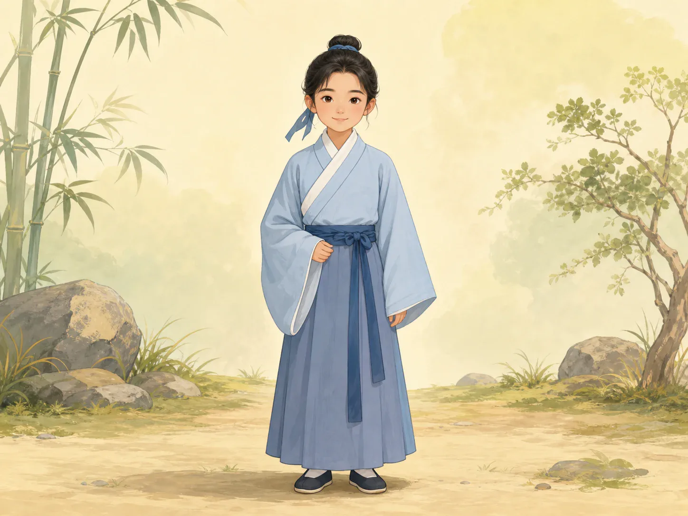
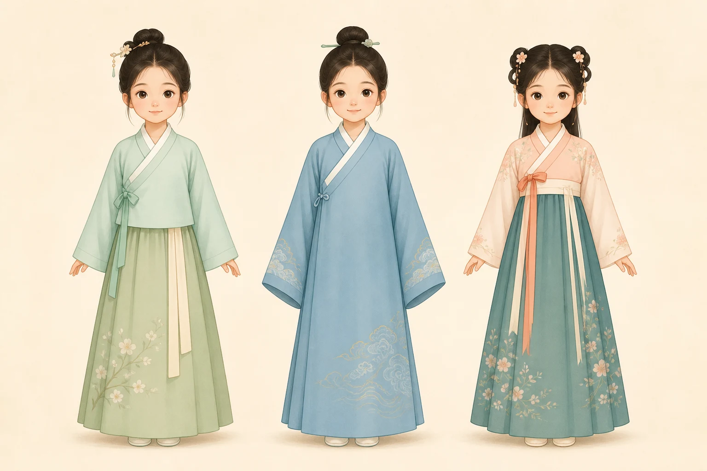

汉服：穿在身上的历史书
Hanfu: A History Book Worn on the Body
Page 1
最好认的地方，是斜斜的衣领
The Easiest Part to Notice Is the Slanting Collar

The right side crosses over the left, making a slanting line across the chest.
很多人一看到汉服，最先注意到的就是衣领。
它常常不是直直合起来的，而是斜着交在胸前。
右边压左边，这叫“交领右衽”。
这个小小的穿法，后来变成了很多人一眼认出汉服的线索。
When many people see hanfu, the first thing they notice is the collar.
It usually does not close straight down the middle. Instead, it crosses diagonally at the chest.
The right side crosses over the left. This is called a crossed collar with right over left.
That one small detail later became one of the easiest clues for recognizing hanfu at a glance.
Page 2
同一个老想法，能变出很多样子
One Old Idea Could Grow into Many Shapes

Upper garment and skirt, long robe, and ruqun look different, but they all connect to very old clothing ideas.
很早很早以前，中国人的衣服常常会分成上面一件、下面一件。
后来，这个老想法慢慢变出了很多不同的样子。
有的是长长连起来的，有的是上衣配裙子，有的看起来更轻巧。
所以汉服不是只有一种样子，而像一棵长了很多枝叶的大树。
Long ago, Chinese clothing was often thought of as something with one part on top and one part below.
Later, that old idea slowly grew into many different shapes.
Some forms became one long robe. Some became a top with a skirt. Some looked lighter and more playful.
That is why hanfu is not only one look. It is more like a tree with many branches.
Page 3
大袖子会告诉你，这双手平时做什么
Big Sleeves Can Hint at What the Hands Usually Do
When sleeves are very wide, the hands disappear inside a little, making the clothing feel better for writing, music, and ceremony.
有些汉服的袖子很大，大到手都快被藏起来了。
这样的衣服不太适合搬东西、跑来跑去。
它更像是给写字、读书、弹琴和行礼的人穿的。
所以古代人有时候只看袖子，也能猜出一个人的生活大概是什么样。
Some hanfu sleeves are very wide, so wide that the hands almost disappear inside them.
Clothes like that are not very good for carrying heavy things or running around.
They feel more suited to writing, studying, playing music, and taking part in ceremony.
That is why people long ago could sometimes look at sleeves and guess what a person's daily life was probably like.
Page 4
今天还有很多人喜欢穿汉服
Many People Still Enjoy Hanfu Today
今天，很多年轻人会穿着汉服去博物馆、花园和传统节日活动。
有的人喜欢它好看，有的人喜欢研究不同朝代的样子。
对他们来说，这不只是打扮，也像是在和很久以前的衣服传统重新打招呼。
历史忽然就不只在书里了。
Today, many young people wear hanfu to museums, gardens, and traditional festivals.
Some love the beauty of it. Some enjoy studying how the shapes changed from dynasty to dynasty.
For them, this is not only dressing up. It is also a way of saying hello again to a very old clothing tradition.
History suddenly stops living only inside books.
小结
In Summary
汉服最容易认出来的地方，是交领右衽和宽大的衣袖。它虽然会变出很多不同样子，可背后都连着很长很长的服饰传统。今天人们重新穿上它，也是在把历史重新穿回身上。
The easiest parts of hanfu to recognize are the crossed collar and the wide sleeves. Even though hanfu can take many shapes, they all connect to a very long clothing tradition. When people wear it again today, they are also putting a piece of history back onto the body.